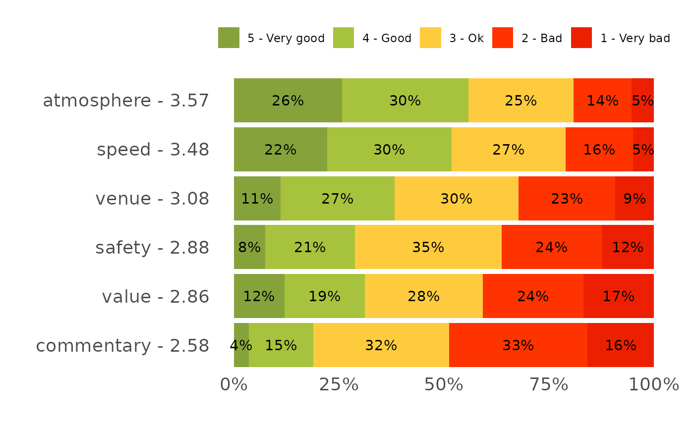
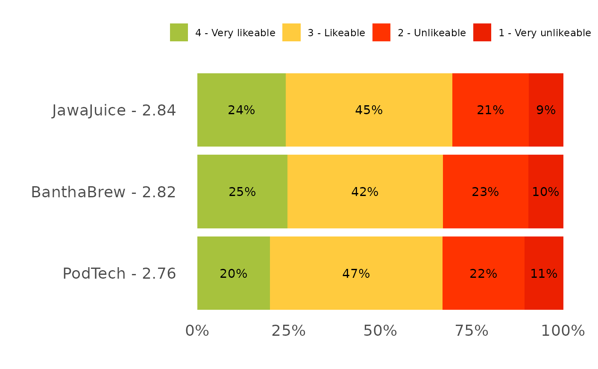

The one-line form of plot_stacked_rating() for the common case: a block of
columns sharing a prefix, each asking the same rating question about a
different feature or brand. Tabulates the block, tidies the question names,
numbers the answers by their position on the scale and stacks the result.
Arguments
- data
A data frame. If omitted, the session default (
use_dataset()).- prefix
The block's shared column prefix, e.g.
"ratings_". It is stripped from the feature labels.- levels
The scale's answer wordings, worst first.
NULL(default) looks the block up in the order registry (register_order()), falling back to therecode_likert()default five-point scale.- digits
Decimal places kept in the underlying percentages. Default
2.- ...
Passed to
plot_stacked_rating()(palette,label_min,show_average).
Details
Answers are numbered by their position in levels, which is what orders the
features by their weighted mean and colours the segments worst-to-best. A
wording that is not on the scale cannot be numbered, so it is reported rather
than being silently dropped into an unlabelled segment: check it against the
raw export, since exports often differ from a questionnaire by a typo.
Registering the block once with
register_order("likeability", levels, prefixes = "partner_likeability_")
removes the levels argument from every later call.
Examples
plot_rating_grid(podracing_survey, "ratings_")

plot_rating_grid(podracing_survey, "partner_likeability_",
levels = c("Very unlikeable", "Unlikeable",
"Likeable", "Very likeable"))
